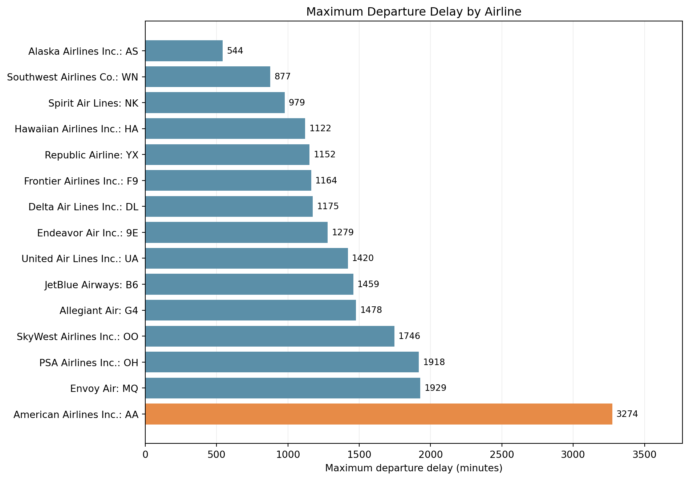
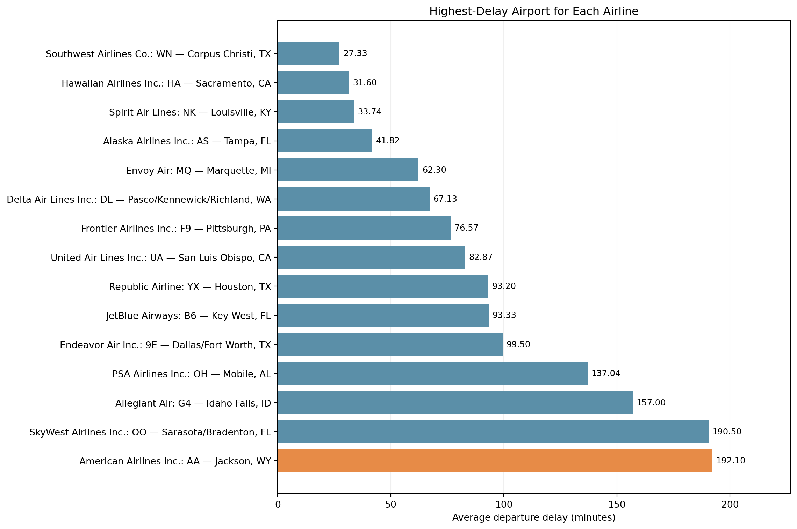

Airlines & Airports
Q1: Maximum Departure Delays
I used SQL to find the largest departure delay for each airline. The chart below shows the results in minutes.
Q2: Maximum Early Departures
I used SQL to find the greatest number of minutes early for each airline. The query lists airlines from the largest early departure to the smallest.
The exported result contains airline names only. The table below keeps the order returned by the SQL query.
| Position in query result | Airline |
|---|---|
| 1 | Delta Air Lines Inc.: DL |
| 2 | Alaska Airlines Inc.: AS |
| 3 | Allegiant Air: G4 |
| 4 | JetBlue Airways: B6 |
| 5 | PSA Airlines Inc.: OH |
| 6 | Frontier Airlines Inc.: F9 |
| 7 | United Air Lines Inc.: UA |
| 8 | American Airlines Inc.: AA |
| 9 | SkyWest Airlines Inc.: OO |
| 10 | Endeavor Air Inc.: 9E |
| 11 | Spirit Air Lines: NK |
| 12 | Envoy Air: MQ |
| 13 | Republic Airline: YX |
| 14 | Hawaiian Airlines Inc.: HA |
| 15 | Southwest Airlines Co.: WN |
The position shows the order in the exported result. It does not show how many minutes early each airline departed, and airlines with the same value may appear in separate positions.
This result describes each airline’s earliest departure. It does not show how often that airline departed early.
Q4: Airport with the Highest Average Departure Delay
I calculated the average departure delay for each airport using non-cancelled flights. Following the question, I treated early departures as zero delay.
The query returns the airport with the highest average.
| Airport | Code | Average departure delay (minutes) |
|---|---|---|
| Hagerstown, MD: Hagerstown Regional-Richard A. Henson Field | HGR | 107.38 |
This average describes the non-cancelled flights at the airport during December 2024. It does not mean every flight had this delay. Airport flight counts would also help explain the comparison, because averages based on fewer flights can be more sensitive to individual long delays.
Q5: Highest-Delay Airport for Each Airline
For each airline, I compared its average departure delay across departure airports and selected the airport with the highest average.
I used non-cancelled flights and counted early departures as zero delay, following the same approach as Q4.

Each bar represents one airline at its selected airport. It is not the airline’s average delay across all airports. The chart uses city names for shorter labels; the full airport names are listed below.
| Airline | Airport | Average delay (minutes) |
|---|---|---|
| Southwest Airlines Co.: WN | Corpus Christi, TX: Corpus Christi International | 27.33 |
| Hawaiian Airlines Inc.: HA | Sacramento, CA: Sacramento International | 31.60 |
| Spirit Air Lines: NK | Louisville, KY: Louisville Muhammad Ali International | 33.74 |
| Alaska Airlines Inc.: AS | Tampa, FL: Tampa International | 41.82 |
| Envoy Air: MQ | Marquette, MI: Sawyer International | 62.30 |
| Delta Air Lines Inc.: DL | Pasco/Kennewick/Richland, WA: Tri Cities | 67.13 |
| Frontier Airlines Inc.: F9 | Pittsburgh, PA: Pittsburgh International | 76.57 |
| United Air Lines Inc.: UA | San Luis Obispo, CA: San Luis County Regional | 82.87 |
| Republic Airline: YX | Houston, TX: George Bush Intercontinental/Houston | 93.20 |
| JetBlue Airways: B6 | Key West, FL: Key West International | 93.33 |
| Endeavor Air Inc.: 9E | Dallas/Fort Worth, TX: Dallas/Fort Worth International | 99.50 |
| PSA Airlines Inc.: OH | Mobile, AL: Mobile Regional | 137.04 |
| Allegiant Air: G4 | Idaho Falls, ID: Idaho Falls Regional | 157.00 |
| SkyWest Airlines Inc.: OO | Sarasota/Bradenton, FL: Sarasota/Bradenton International | 190.50 |
| American Airlines Inc.: AA | Jackson, WY: Jackson Hole | 192.10 |